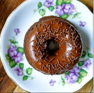

Donas de chispas
Ingredientes:
- 40 Gramos de levadura fresca.
- 250 Gramos de azúcar.
- 80 Gramos de Mantequilla.
- 1 Kilo de harina.
- 4 Huevo.
- 1 Chorrito de vainilla.
- 200 Mililitros de leche.
Pasos a seguir:

- Lo primero que haremos es verter en un tazón la harina, en el centro hacemos un hueco para colocar la levadura.
- En el mismo hueco vertimos la leche a modo de hilo, reservamos.
- Vamos a derretir la mantequilla en el microondas y se la añadimos a la harina, luego agregamos el resto de los ingredientes.
- Comenzamos a amasar hasta tener una mezcla lisa y que se pueda estirar. Es importante que su textura permita que no se nos pegue en las manos.
- Ya que nuestra masa está lista, vamos a taparla y dejarla reposar durrante una hora, esto para que tome volumen.
- Ha pasado el tiempo indicado, y vamos a estirarla para romper las burbujas de gas, hasta que tenga solo unos centímetros de grosor.
- Cuando hayamos estirado la masa, vamos a cortar las donas, si no tienes un molde puedes usar cualquier objeto redondo, una taza por ejemplo.
- Cuando hayas formado tus donas, es importante que las dejemos reposar, algunos 30 minutos.